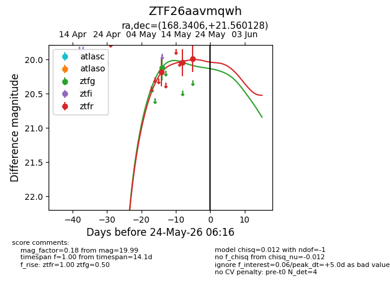
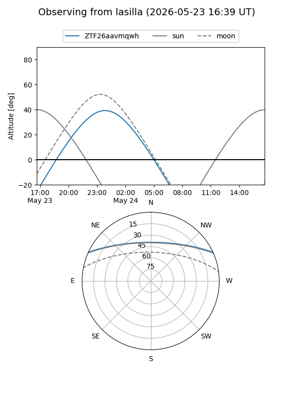
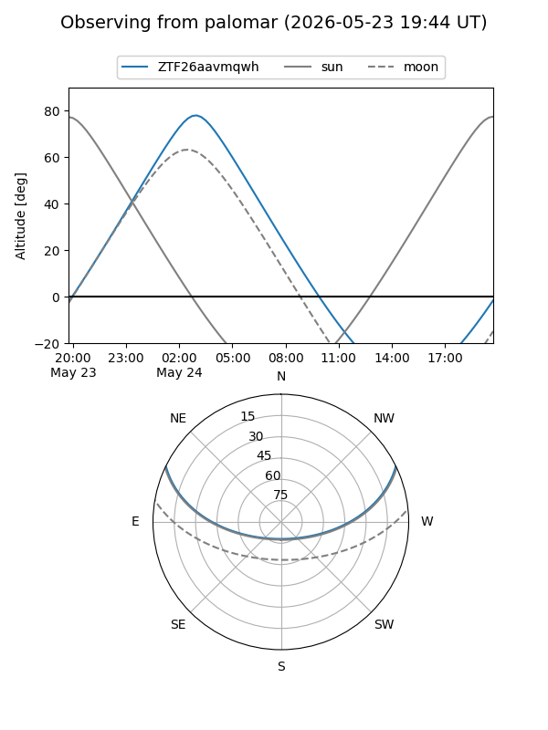
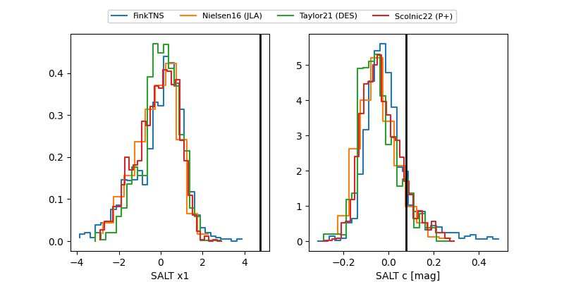

ZTF26aavmqwh
Target ZTF26aavmqwh at 2026-05-24 06:17
Aliases and brokers:
lsst-FINK: link
lsst-Lasair: link
lsst-ALeRCE: link
ztf-FINK: link
ztf-Lasair: link
ztf-ALeRCE: link
alt names
ZTF26aavmqwh (ztf,fink_ztf)
Coordinates:
equatorial (ra, dec) = 168.3406,+21.56013
equatorial (HMS+DMS) = 11:13:21.74,+21:33:36.46
galactic (l, b) = (221.5924,+67.02006)
Flags:
Photometry:
last ztfg=20.12, ztfr=19.99
1 ztfg, 3 ztfr detections
Lightcurve

Visibility


Additional plots
